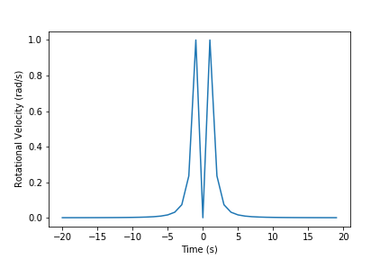

This website holds a collection of animations visualising the rotational velocity of a car or multiple cars
relative to an observer. This is therefore a means of visualising how an observer would judge the speed of the car.
For example, this graph shows the rotational velocity relative to an observer over time if the linear acceleration of the
car is constant.

Adding obstructions could interfere with the observer's ability to judge this,
particularly if the car is accelerating. As a result, another car passing between the observer and the car whose velocity
they wish to judge may change their estimate of the speed of the car if they interpolate incorrectly.
Additionally, as shown under 'Relativistic Cars', the obstruction of the car would alter if the obstruction were moving at
relativistic speeds; the animation on this page explores length contraction at such speeds rather than rotational velocity.
The animations were produced in Processing and uploaded using Processing.js.